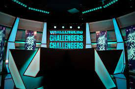
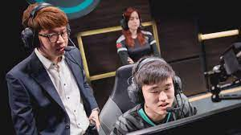

There are many different paths and fields within the esports industry anywhere from being a player to owning your own team/organization(org) and everything in between.
Some examples of all the different fields are these descriptions from (british esports) Professional players- These are the people that play their respective game at a professional/competitive level.
Shoutcasters- These are the commentators who provide commentary during the match, They may also host interviews with the players at a one on one level.
Coach- Just like traditional sports coaches will help and guide their players to try and win the match. They have a strong knowledge of the game and know what should be done and when it should be done.
Team manager/Owner- They own the team, they could be incharge of writing up player contracts, and they are the people trying to find new talent.
Content Creator- These people aren't good at one game but at many but not to the level of the competitive players. They mainly stream and create videos, and are more entertainers than players.
Marketing- Just like traditional marketing the marketing department is incharge of bringing exposure to the team or organization and trying to get fans evolved with their new videos, or possibly some merchandise that the team sells.
Social Media Manager- Just as the name says they are in charge of running the socials for the team. They could post when the team does good/ bad or when they have a match coming up.
Partnership Managers- These people are engarche of forming new partnerships with different companies. Some common partnerships in the esports industry are things like energy drinks, clothing brands, different keyboard/mouse brands and possible pop culture companies.
Event Managers- They are incharge of running big in person events, so that the players can compete face to face.
Production- These people can help run the social media or help run these big events mentioned above, but if they are hired by a team they would be incharge of the videos that get published or maybe even media shoots.
 To go along with all the different positions that are involved in esports a lot of colleges are trying to hop on the hype train of esports and trying to get people that like it involved early.
Each year more and more schools adopt a degree program either in Esports management, the business side of esports for roles like the team manager, event manager, and the partnership managers. Another popular track is the esports media production degree that could get you ready for roles like production, social media managers, and even content creators.
As of June 2023 according to (needstreet) the top ten schools with esports programs are